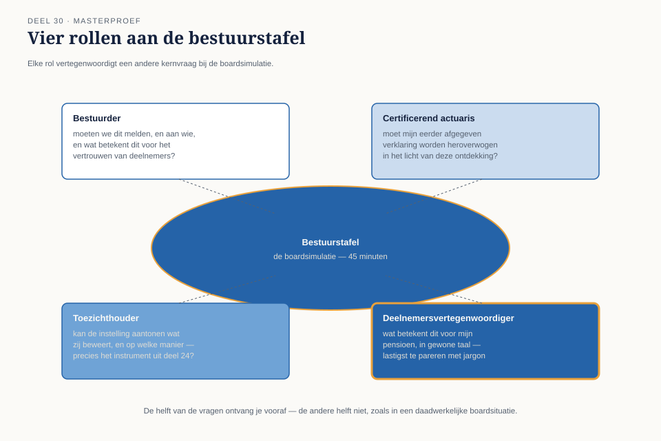

Deel 30 — Masterproef: "De onbewijsbare berekening"
Reader · Ductus-cursus Testen en Kwaliteitsborging · niveau 3 (expert) · deel 30 van 30
Dit deel beslaat twee dagdelen en sluit niet alleen niveau 3, maar de hele cursus af. Alles uit dertig delen komt hier samen.
Leerdoelen
Na dit deel kun je:
- een complexe, ambigue testsituatie analyseren zonder de neiging tot een geruststellender antwoord dan gerechtvaardigd is;
- een schriftelijk bevindingen- en herstelrapport schrijven met expliciete scheiding tussen aangetoond, aannemelijk en onbekend;
- je conclusies verdedigen tegen vier verschillende, kritische publieksrollen in een boardsetting;
- het verschil erkennen — en uitleggen — tussen een geruststellend antwoord en een eerlijk antwoord, en beargumenteren waarom het tweede uiteindelijk het enige professioneel verdedigbare is;
- terugkijken op je eigen ontwikkeling door de cursus heen, van de openingsvraag in niveau 1 tot dit moment.
Studielast: dit deel beslaat een volledig dagdeel schriftelijk werk plus een volledig dagdeel boardsimulatie.
1. Vier maanden na de overgang
De Wtp-transitie is voltooid. Op 1 januari 2028 zijn de aanspraken van 340.000 deelnemers van Meridiaan Pensioen ingevaren naar het nieuwe stelsel. De livegang zelf verliep, voor zover zichtbaar, zonder incident. Willemien van Ballegooijen heeft haar actuariële verklaring afgegeven. De accountant heeft een goedkeurende verklaring bij de jaarrekening verstrekt. DNB heeft geen bezwaren geuit.
Vier maanden later, bij een routinematige controle in het kader van de doorlopende compliancevalidatie (niveau 3, deel 23), stuit een junior data-analist op iets onverwachts: de referentieset die tijdens de invaaracceptatietest werd gebruikt om de nieuwe berekening onafhankelijk te verifiëren — de parallelberekening uit deel 25 — bleek, bij nader onderzoek van de brondata-extractie, uit dezelfde onderliggende databron te zijn samengesteld als de productieberekening zelf. Niet dezelfde rekenmethode; wél dezelfde bron.
De praktische consequentie is onthutsend eenvoudig te formuleren en buitengewoon lastig te dragen: de "onafhankelijke" verificatie was, op het punt van de brondata, niet onafhankelijk. Er is geen aangetoonde fout in de invaarberekening. Er is evenmin aangetoonde juistheid. Er is, na vier maanden van veronderstelde zekerheid, een gat waar zekerheid hoorde te zitten.
Kernzin — Dit is niet het verhaal van een fout die is gevonden. Het is het verhaal van een zekerheid die, bij nader onderzoek, nooit heeft bestaan op de manier waarop iedereen aannam dat zij bestond.
2. Waarom dit scenario, en niet een gewone fout
Elke andere casus in deze cursus — WGP 2.0, het Mutatieplatform, de vroege Stelselovergang-incidenten — draaide uiteindelijk om een vindbare fout: iets dat, met de juiste techniek, zichtbaar werd. Dit scenario is fundamenteel anders. Het raakt niet de correctheid van de berekening maar de aantoonbaarheid ervan — het instrument (deel 24, §6.1) waarmee onafhankelijkheid werd geclaimd, blijkt zelf niet te voldoen aan de eis die het claimde te vervullen.
Dit is de existentiële vorm van het orakelprobleem (deel 25, §5) in zijn volle consequentie: niet "we hebben geen orakel", maar "we dáchten een orakel te hebben, en dat bleek een spiegel te zijn die zichzelf terugkaatste".
3. De opdracht
Je bent, individueel, verantwoordelijk voor het testwerk rond deze ontdekking. Twee dagdelen, twee onderdelen.
Dagdeel A — Het schriftelijk bevindingen- en herstelrapport
Maximaal tien pagina's. Vereist, conform de ladder van zekerheid (deel 23) als beoordelingsraster door het hele rapport heen:
- Feitelijke vaststelling: wat is precies aangetoond over de brondata-overlap, met bewijs (deel 24, §3.1)?
- Impactanalyse: wat is, gegeven deze ontdekking, nog wél aantoonbaar over de juistheid van de invaarberekening, en wat niet meer? Onderscheid expliciet tussen aangetoond, herhaalbaar vastgesteld, aannemelijk en aangenomen (deel 23, §2.2) voor elk deelaspect van de berekening.
- Herstelopties: welke vervolgstappen zijn mogelijk om alsnog tot een onafhankelijke verificatie te komen — een nieuwe, werkelijk onafhankelijke parallelberekening (deel 25, §2.2), een deelwaarneming met een volledig gescheiden brondata-extractie (deel 25, §3.2), of iets anders? Beoordeel elke optie op haalbaarheid, kosten en de mate van zekerheid die zij daadwerkelijk zou opleveren.
- Een expliciete, onderbouwde conclusie over wat het rapport wél en niet kan beweren — zonder de druk (deel 29, §4) om dit geruststellender te formuleren dan het bewijs toelaat.
Dagdeel B — De boardsimulatie
Vijfenveertig minuten, voor een bestuurstafel van vier rollen (§4). De helft van de vragen die gesteld zullen worden, ontvang je vooraf — de andere helft niet, zoals in een daadwerkelijke boardsituatie.
4. De vier rollen
- Bestuurder — verantwoordelijk voor het geheel, wil weten: moeten we dit melden, en aan wie, en wat betekent dit voor het vertrouwen van deelnemers?
- Certificerend actuaris (Willemien van Ballegooijen) — heeft haar handtekening al gezet onder de oorspronkelijke verklaring; wil weten of en hoe die verklaring in het licht van deze ontdekking heroverwogen moet worden.
- Toezichthouder — vertegenwoordigt DNB/AFM; stelt vragen vanuit precies het instrument uit deel 24: kan de instelling aantonen wat zij beweert, en op welke manier?
- Deelnemersvertegenwoordiger — vertegenwoordigt het belang van de 340.000 deelnemers wier aanspraken zijn ingevaren; stelt de vraag die het lastigst te pareren is met technisch jargon: "wat betekent dit voor mijn pensioen, in gewone taal?"

5. Wat wordt beoordeeld
De rubric van deze masterproef beloont expliciet een onderbouwd "dit kunnen we niet aantonen" boven een geruststellend herstelplan dat meer zekerheid suggereert dan het bewijs rechtvaardigt.
Concreet:
- Eerlijkheid van de ladder-toepassing: worden aangetoond, herhaalbaar vastgesteld, aannemelijk en aangenomen correct en niet-optimistisch toegepast op elk deelaspect?
- Kwaliteit van de herstelopties: zijn zij realistisch beoordeeld op wat zij daadwerkelijk aan zekerheid toevoegen, niet alleen op wat zij lijken toe te voegen?
- Standvastigheid in de boardsimulatie: houdt de conclusie stand onder de druk van vier verschillende, kritische perspectieven, zonder toe te geven aan de verleiding om het geruststellender te formuleren dan gerechtvaardigd (deel 29)?
- Toegankelijkheid voor de deelnemersvertegenwoordiger: kan de kernboodschap worden overgebracht in taal die geen technische achtergrond vereist, zonder de inhoud te versimpelen tot onwaarheid?
Kernzin — Een kandidaat die overtuigend "dit is opgelost" beweert zonder dat het bewijs dat draagt, scoort lager dan een kandidaat die overtuigend zegt: "dit kunnen we op dit moment niet aantonen, en hier is precies waarom, en hier is wat we wél kunnen doen." De tweede boodschap is ongemakkelijker om te geven en om te ontvangen — en is de enige die deze cursus, van deel 1 tot hier, heeft voorbereid als de juiste.
6. Wat deze masterproef samenbrengt
Elk vast anker uit deze cursus komt in deze ene opdracht terug:
- De ladder van zekerheid (deel 23) is het expliciete beoordelingsraster van het hele rapport.
- Testen levert informatie, geen oordeel (deel 1, 9, 21, 29) — het rapport adviseert, het bestuur en de toezichthouder beslissen.
- Een groen rapport is een bewering, geen bewijs (deel 1, 10, 22) — hier in zijn scherpste vorm: een rapport dat groen léék, bleek dat niet te zijn.
- Wat je niet test, test je in productie (deel 7, 12, 18, 28) — hier: wat je niet onafhankelijk verifieert, verifieert de werkelijkheid uiteindelijk zelf, vier maanden later, via een toevallige ontdekking.
- Het orakelprobleem (deel 5, 20, 25) — in zijn volledige, existentiële vorm: een orakel dat zichzelf bleek te zijn.
- De testbevindingen T1-T8 uit WGP 2.0 (niveau 1) zijn, in zekere zin, allemaal opnieuw aanwezig: geen traceerbaarheid van de brondata-herkomst (T1), geen statische toetsing van de onafhankelijkheidsclaim vóór gebruik (T4), een aanname die nooit werd getoetst totdat de werkelijkheid het deed (T3, T8).
7. Terugblik op de hele cursus
Bij de start van niveau 1, deel 1, kreeg je de vraag: "zou jij dit systeem live laten gaan?" De meeste antwoorden waren toen een voorzichtig, onderbouwd ja of nee, gebaseerd op wat op dat moment bekend was. Dertig delen later is de vaardigheid niet langer het geven van een antwoord — het is het eerlijk kunnen zeggen wanneer een antwoord niet gegeven kan worden, en waarom dat zelf de meest waardevolle informatie is die je kunt leveren.
Dat is geen zwakte van het testvak. Het is, zoals deze hele cursus heeft betoogd, de kern ervan.
Kernbegrippen
(Dit deel introduceert geen nieuwe kernbegrippen; het integreert alle begrippen uit de gehele cursus, niveau 1 tot en met 3.)
Samenvatting in vijf zinnen
- Vier maanden na een op het oog vlekkeloze Stelselovergang blijkt de "onafhankelijke" verificatie zelf niet onafhankelijk te zijn geweest — geen aangetoonde fout, evenmin aangetoonde juistheid.
- Dit scenario raakt niet de correctheid van een berekening maar de aantoonbaarheid ervan, de existentiële vorm van het orakelprobleem: een orakel dat zichzelf bleek te zijn.
- Het bevindingen- en herstelrapport (dagdeel A) past de ladder van zekerheid toe op elk deelaspect, zonder de druk om geruststellender te rapporteren dan het bewijs toelaat.
- De boardsimulatie (dagdeel B) test of die eerlijkheid standhoudt tegen vier verschillende, kritische perspectieven — bestuurder, actuaris, toezichthouder, deelnemersvertegenwoordiger.
- De rubric beloont een onderbouwd "dit kunnen we niet aantonen" boven een geruststellend herstelplan — de meest ongemakkelijke boodschap is hier, zoals door de hele cursus heen, de enige juiste.